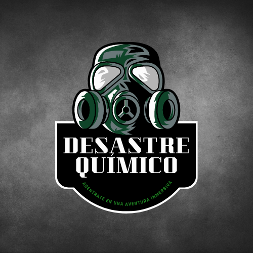

Experiencia Desastre Químico
En un laboratorio, por error, se ha ocasionado una fuga de un gas muy peligroso. Solo dispondreis de 60 minutos para evitar que este se propague al exterior y pueda ocasionar unos daños catastróficos. Para ello, habrá que averiguar la clave de acceso al area restringida del laboratorio y entrar con el equipo necesario para lograr rescatar a las personas que hallan dentro. Solo uno de los cientificos que se encuentra en el interior sabe la manera de evitar que el gas salga al exterior, pero este se encuentra encerrado en una de las salas de seguridad del edificio.
Vuestra misión será encontrar al cientifico Van Housen que os dará las pautas a seguir para que el gas no se propague, este se encuentra en la zona de seguridad 3, y evacuar a los trabajadores que se encuentran en la zona 4, el area restringida. Para ello debereis averiguar un código de seis números y tres letras. Por seguridad la parte numérica de este código esta guardado en una caja fuerte en las oficinas del area 1 y en el area 2 se encuentra la segunda parte del código, pero no tenemos información de su localización exacta. Recordar, solo dispondreis de 60 minutos de oxigeno.
Mucha suerte. Nuestra vida depende de vosotros.

| Reservar |
|---|
Experiencia Lux
Corren tiempos inciertos en el mundo de la magia. El principio de los días oscuros ha comenzado y la era de la luz está llegando a su fin. Morgana ha conseguido reunir a los magos más poderosos del mundo para destruir todo lo que se encuentren a su paso y sembrar la oscuridad eterna. Cuentan las leyendas que gran parte del poder de Morgana reside en su libro de hechizos, un libro que el hechicero oculta en el interior de su fortaleza. Con la ayuda de Lux, tendrás que adentrarte en su morada, las raices del abismo, y robar este poderoso libro para destruirlo. Solo así la luz prevalecerá.
Vuestra misión es encontrar el libro de hechizos y destruirlo, pero no será facil, Morgana cuenta con poderosos subditos que tendreis que enfrentar. En el camino encontrareis varios artefactos mágicos con los que debereis hacerles frente, ya que al derrotarlos, conseguireis unas podrosas gemas que os ayudaran a romper el escudo que protege el libro de hechizos de Morgana. Lux ha conseguido detener a Morgana con una poderosa barrera para daros todo el tiempo posible, pero 60 minutos es el máximo que la barrera aguantará, y si eso pasa y el libro sigue intacto no habrá forma de pararla y la oscuridad vencerá.
| Reservar |
|---|
Experiencia El tesoro maldito
Todo comenzó cuando el pirata John Callis decide apoderarse de los diamantes ocultos en una gruta natural de un islote perdido en el sur de Gales. Había una leyenda que hablaba de una maldición para el poseedor de estas joyas. John Callis y su tripulación se hicieron con el jugoso botín, pero a las pocas horas, por desgracia, descubre que las habladurías eran ciertas, y una vez con la posesión de dichas joyas, una terrible epidemia infectó a la tripulación, siendo condenados desde entonces, y al capitán del navío, obligado a vagar por su buque encallado por toda la eternidad. Cuenta la leyenda que si se consigue devolver los diamantes a su cofre, la maldición acabará para siempre, y el capitán podrá obtener su ansiado descanso eterno…
Vosotros compañeros corsarios, debereis adentraros al islote portando las joyas para acabar con la maldición. Pero debeis de tener mucho cuidado, ya que la maldición podría afectaros si portaís el tesoro por más de 75 minutos. El capitán John Callis dejó un mapa con las coordenadas exactas de donde se encontraba el botín. Tendreís que superar dificultosas pruebas hasta llegar al punto exacto donde depositarlo. Habrá un gran botín lleno de oro como recompensa por acabar la maldición. Adelante compañeros, solo vosotros sois capaces de conseguirlo.
| Reservar |
|---|